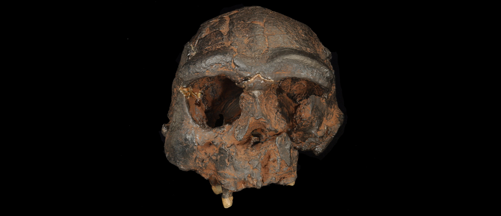
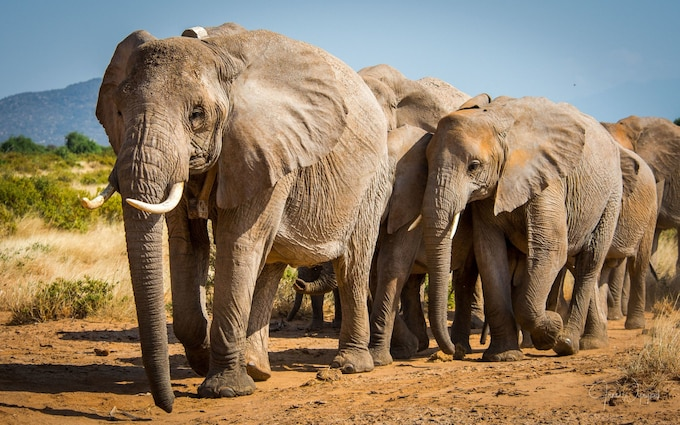

New evidence in search for the mysterious Denisovans
In the study published in Nature Ecology and Evolution, the researchers examined the genomes of more than 400 modern humans to investigate the interbreeding events between ancient humans and modern human populations who arrived at Island Southeast Asia 50,000–60,000 years ago.
An international group of researchers including experts from the Natural History Museum and led by the University of Adelaide has conducted a comprehensive genetic analysis and found no evidence of interbreeding between modern humans and the ancient humans known from fossil records in Island Southeast Asia. The team found further DNA evidence of our mysterious ancient cousins, the Denisovans, which could mean there are major discoveries to come in the region. (Read More...)
New black hole image reveals magnetic fields
A new image showing magnetic fields surrounding the supermassive black hole M87* has been created by scientists working on the Event Horizon Telescope (EHT). The magnetic structure was mapped by measuring the polarization of the light emitted by matter in the hot region around the black hole. Understanding the magnetic properties of that region could provide important insights into how powerful jets of radiation and matter are emitted by some black holes. (Read More...)
SpaceX’s fourth Starlink launch in under a month deploys another 60 satellites
As usual, SpaceX used its Falcon-9 rocket for the mission. What’s particularly impressive about this launch is the flight-prove booster served on five previous missions. Over 1,000 Starlink satellites are currently in orbit of 12,000 that have been authorised. Filings have been submitted to the International Telecommunication Union (ITU) requesting permission to launch 30,000 additional Starlink satellites. SpaceX is currently launching around 60 satellites at a time and aims to have deployed 1,440 by late 2021 to provide near-global service. In addition to today’s launch, the company also held launches this month on the 4th, 11th, and 14th. (Read More...)
African elephant recognised as two separate species – both endangered
‘Red list’ assessment of two separate African species exposes ‘critically endangered’ status of forest elephants, down 86% in 31 years.
The first ever “red list” assessment of the African elephant as two separate species – the forest elephant and savanna elephant – has found that both are threatened with extinction, according to an updated review of the world’s most at-risk plants and animals. Poaching and the “silent killer” of human-driven habitat loss have caused sharp declines, with forest elephant numbers falling by 86% in the past 31 years and savanna elephants by about 60% in the past half-century.
...
...